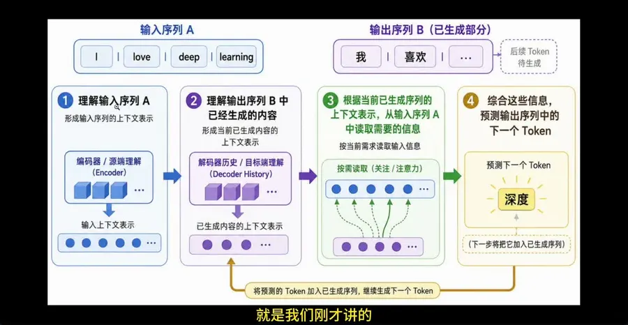

27 Transformer 注意力究竟在做什么（实测产物节选）
这集把三种注意力拆开：编码器看输入，解码器看已经生成的前缀，两边再对照一次。笔记按讲解顺序写，板书和公式截在对应的话旁边。
时长：34 分钟 · 系列进度：27 / 35 · 关键帧配图：32 张
1. 三种注意力在 Transformer 中的分工
Transformer 常见三种注意力：Encoder 的 self-attention、Decoder 的 masked self-attention 和 Encoder–Decoder cross-attention。它们各自的 Query / Key / Value 来源与掩码约束决定了信息流动的边界。
 点击放大
点击放大

点击放大